Something broken? Click your problem below. Learning Twine? Go step by step: start at Step 1, then click Next at the bottom of each page. Still stuck? Send me a Mio.
If your game could be rewritten as a short essay and lose nothing, the game isn't doing the work.
The argument has to live in the systems: win/loss conditions, numbers going up and down, choices that get locked out, things that get punished or rewarded. This is procedural rhetoric. Gamification (scores, streaks, and rewards creeping into non-game parts of life) is a natural target, but any course topic works if the mechanics carry the point.
A good check: can you say your argument in one sentence, and point to the variable that makes it?
I have no idea what to make. Where do I start?
Here are some shapes that tend to work in Twine and connect to the course. Use one, combine two, or ignore them all.
Shape
The idea
Gamification (a good place to start)
Scores, streaks, ratings, and rewards creeping into non-game parts of life. It's what the second half of the course is about, and it's easy to build systems around. Most of the shapes below can be pointed at it.
Score-world
Your prospects (jobs, housing, relationships, freedom) depend on a score in an app. Nosedive and social credit are reference points; credit scores, Uber ratings, and GPAs are the everyday versions.
The optimizer
You're trying to maximize a metric (steps, productivity, engagement, grades, followers), and the game makes you feel what that does to everything else.
The rigged system
Looks fair on the surface, but variables under the hood are stacked against the player. Good for structural inequality, algorithmic bias, "meritocracy".
The bureaucratic maze
Navigating a system (healthcare, financial aid, a help desk) where the rules themselves are the antagonist. Papers, Please is the reference point.
The impossible job
A role that can't actually be done well (content moderator, caregiver, teacher under impossible constraints), and the systems make the impossibility visible.
The Chamber of Choices
Choices appear, disappear, or grey out based on stats, background, or earlier decisions. Crossed-out options can make an argument about what's available to whom.
The unreliable narrator
The text says one thing, the variables track another, and the gap is the point. Good for propaganda, self-deception, corporate euphemism.
Story mode
Branching narrative where choice and writing carry most of the weight. Fine, but the systems still have to do some arguing, not just gate scenes.
Inventory as identity
What you pick up, keep, or lose changes who you are and what options you see. Class, consumption, memory.
The countdown
Something is decreasing (time, money, health, hope, attention) and every choice spends it. Scarcity and what people are forced to trade away.
Weird / poetic / abstract
Not every Twine game needs to be narrative or "gamey". Some of the best are closer to poems or mood pieces. Legitimate, if you have an argument that wants to be felt more than played.
Doing something more "gamey" than narrative (a puzzle, a character generator)? You can trade more systems for less text. Flag it at your pitch meeting.
Should we start coding right away?
No. Paper prototype first.
Once you have a couple of promising ideas, sketch them on paper together: boxes for passages, arrows for choices, a note beside each box saying which variables change there. Rough in some dialogue. This is much faster than doing it in Twine, and it keeps you from getting stuck on technical problems before the design is settled. A photo of the sketch is also useful later for your reflection.
Make a few passages and link them. Change link names so they differ from the passage name.
Make a variable (a key), and a door that checks whether you have the key. If you can do that, you can do this project.
Import my example project and look at how it's built.
Hidden help
If you forget the code for something, delete all the text in a passage. A "Twine basics" cheat sheet appears in the background of the empty passage.
Which version of Twine are we using? Why don't the tutorials I found work?
Twine 2, with the Harlowe story format. Tutorials for other formats will not work in your game.
Twine has several "story formats", which are basically different coding languages: Harlowe, SugarCube, Snowman, and Chapbook. They look similar and are completely incompatible. If a tutorial or a forum answer says <<set $gold to 5>> with double angle brackets, that's SugarCube, and it won't work in Harlowe. Harlowe code looks like (set: $gold to 5), with round brackets and a colon.
Before you use any resource, look for the word "Harlowe". If it isn't there, assume it's the wrong one.
To check what your own story is using: open your story, click Story at the top, then Details.
Story tab → Details.The Story Format should say Harlowe 3.something. This panel also counts your words, passages, and broken links, which is handy for checking the project requirements.
Where is my work saved? I lost everything!
Twine saves inside the program (or inside your browser, if you use the web version). It does not save a file anywhere you'd expect. Make your own backups.
If you use Twine in a web browser, your stories live in that browser's storage. That means:
If you clear your browser history/cache, your story is gone.
If you switch browsers or computers (a lab computer, your friend's laptop), your story is not there.
If you use an incognito/private window, your story disappears when you close it.
The fix: every time you finish working, click Build → Publish to File. That downloads an .html file of your whole game. Put it somewhere safe (Google Drive, OneDrive, email it to yourself). That file is both your backup and the thing you submit.
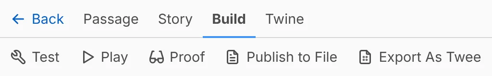
Build → Publish to File. Do this at the end of every work session.
Tip
Rename your backups with a date or number (shift-v3.html) so you can go back to an older version if you break something.
Backing up everything at once: on the Twine home screen, Library → Archive downloads all your stories in one file. You can import that file later to get them all back. It's a backup only: you can't play it or submit it.
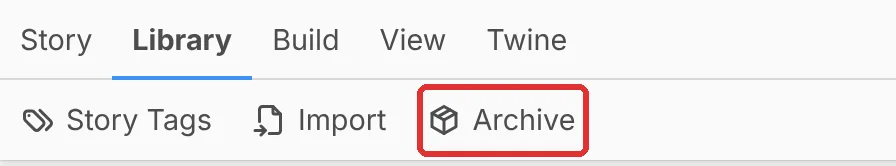
Library → Archive.
App and browser don't share
The Twine app you download and Twine in a browser keep separate libraries. A story you made in the lab's browser is not in the app on your laptop (and the other way around). Move it with Publish to File, then Library → Import.
How do I open my saved game again (or open the example game)?
From the Twine home screen (the Library): Library → Import, then pick the .html file.
Library → Import. Choose your .html (or .twee) file, then click the story card and Edit.
Double-clicking the .html file on your computer will play the game in your browser, not open it for editing. To edit, you have to import it.
Importing can wipe out your game
If your library already has a story with the same name, importing replaces it completely. The only warning is one small line. If the file you're importing is older, you just lost your newer work.
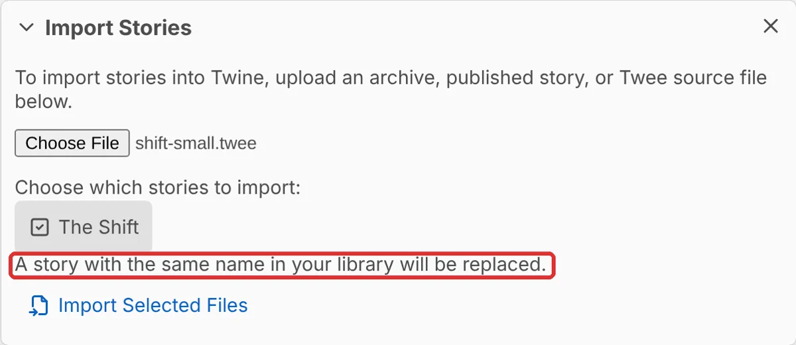
If you see this line, stop and check which version is newer.
Not sure? Rename the story in your library first (Story → Rename, or click the story card and Rename), then import. You'll have both.
Working together
How do we work on one Twine game as a group?
Honestly, Twine isn't built for this. There's no "share" button like Google Docs. Here's what works.
The one rule
Only one person edits the real Twine file at a time. If two people edit two copies, you can't just combine them, and someone's work gets lost. Decide who holds the "master" file.
Pick one approach (or combine them):
Plan together, build alone. Meet (in class, on a call, in person) to do the non-coding parts: brainstorming, paper prototyping, writing. Then one person assembles everything in Twine.
Divide by role. Someone writes the reflection, someone does images and sound, someone writes the passages, someone does the code.
Pass the file around. Everyone works on everything, but one at a time. Finish, Publish to File, send the .html to the next person, who imports it. Say in the group chat who has it.
One long session. Get in a room with laptops and knock out a full draft in an afternoon.
Write in a shared Google Doc, then import it. Below.
Can we write the game in Google Docs and bring it into Twine?
Yes. Twine can import plain text written in a format called Twee. Everyone writes passages in one shared Google Doc, and one person imports it.
In Twee, each passage starts with two colons and its name. Everything under it is the passage text, links and code included:
Shared Google Doc
:: StoryTitle
The Shift
:: Start
(set: $energy to 10)
Your shift starts at 6:00. The app is already watching.
[[Clock in->Locker Room]]
:: Locker Room
Your badge is hanging in the locker.
[[Take the badge->Badge Taken]]
[[Leave it->Floor]]
:: StatusBar [footer]
Energy: $energy
Tags go in square brackets after the name, like [footer] above.
Turn off smart quotes first (everyone in the group): Google Docs → Tools → Preferences → uncheck Use smart quotes. Otherwise your code breaks (why).
Write passages in the Doc. Put your name in a comment (<!-- Ana -->) so you know who wrote what.
When ready, the assembler copies all the text out of the Doc and pastes it into a plain text editor (Windows: Notepad. Mac: TextEdit, then Format → Make Plain Text).
Save it as our-game.twee. In Notepad, set "Save as type" to All files so it doesn't become our-game.twee.txt. Twine only accepts .twee or .html files.
In Twine: Library → Import, choose the .twee file.
Open it, drag the passages into a sensible layout, then do images and testing in Twine.
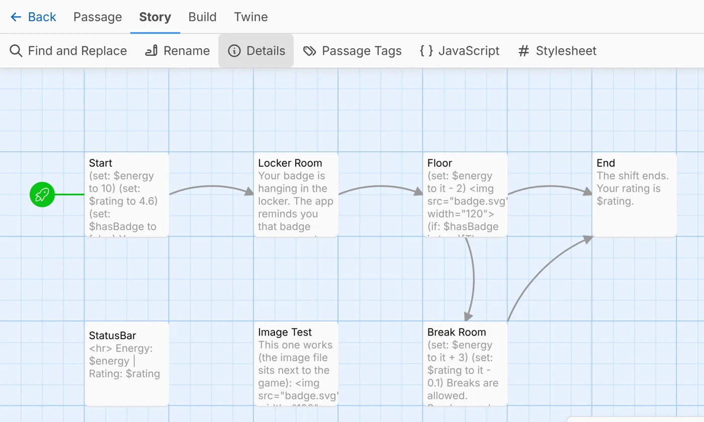
The Doc above, after importing. Passages, links, and the footer tag all came through.
Going the other way
Build → Export As Twee turns your Twine game back into text. Handy for pasting the current version into the Doc so everyone can read it, or for merging: two people can export, paste their passages into one text file, and import that (just make sure no two passages have the same name).
Once you've imported, treat the Twine version as the master.
Don't re-import over your work
If you import the Doc again later, it replaces the story in Twine with the same name, including all the images and code you added since (see the warning). To bring in new passages, rename the old story first, or give the new import a different StoryTitle.
Writing & code
How do links work? Why did a weird empty passage appear?
A link is [[what the player sees->Name Of Passage]]. The part after the arrow has to match the passage name exactly.
[[Clock in->Locker Room]]
[[Locker Room]]
The first shows "Clock in" to the player and goes to the passage called Locker Room. The second shows "Locker Room" and goes to the same place. Using the arrow lets you hide the passage name, which you almost always want.
✗ Typo: lowercase "r" doesn't match the passage "Locker Room"
[[Clock in->Locker room]]
If you make a typo like this, Twine thinks you mean a new passage and creates an empty one. That empty passage is a dead end for the player. Check Story → Details for Broken Links before submitting.
The story map. Arrows show links; the green rocket marks the first passage. A passage with no arrows coming out of it is an ending (or a mistake).
How do I change a variable when the player makes a choice?
Two ways. Either put the (set:) at the top of the passage the choice leads to, or nest it inside the link.
Option A: set it at the top of the next passage (easiest). Give each choice its own passage, and change the variable first thing in that passage.
Passage: Locker Room
[[Take the badge->Badge Taken]]
[[Leave it->Floor]]
Passage: Badge Taken
(set: $hasBadge to true)
You clip the badge to your shirt. It's warm, somehow.
[[Go to the floor->Floor]]
Option B: nest it inside the link. Use (link:) with a hook. When the player clicks, everything in the square brackets runs: first the (set:), then (goto:) sends them to the next passage.
Passage: Locker Room
(link: "Take the badge")[(set: $hasBadge to true)(goto: "Floor")]
[[Leave it->Floor]]
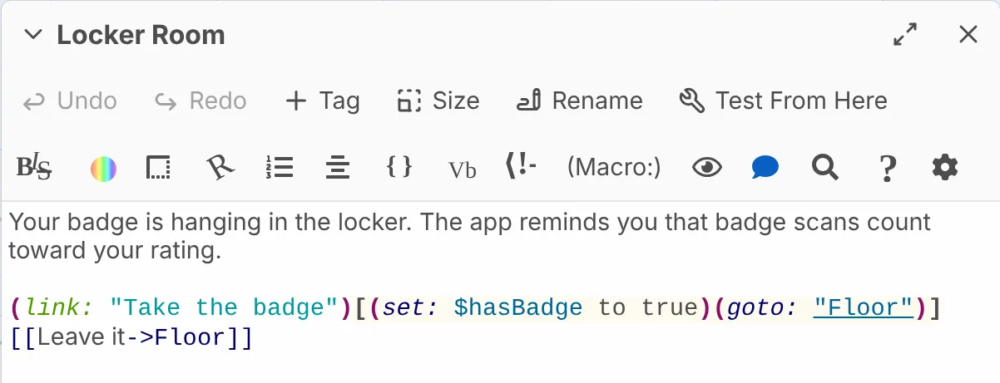
Option B in the Twine editor. Note: links made this way don't draw an arrow on the story map, so the map can look disconnected even when the game works.
Common mistake
A (set:) sitting next to a link does not wait for the click. It runs the moment the passage appears, whatever the player chooses.
✗ Doesn't work
(set: $hasBadge to true)
[[Take the badge->Floor]]
[[Leave it->Floor]]
The player gets the badge even if they click "Leave it", because the (set:) already ran when Locker Room appeared.
✓ Works (Option B)
(link: "Take the badge")[(set: $hasBadge to true)(goto: "Floor")]
[[Leave it->Floor]]
How do variables work? (set, change, check)
A variable is a named box that remembers something. In Harlowe they start with $.
(set: $energy to 10)
(set: $hasBadge to false)
(set: $name to "Sam")
Change it
(set: $energy to it - 2)
(set: $energy to $energy + 3)
Show it to the player
You have $energy energy left.
Check it
(if: $hasBadge is true)[The scanner beeps green.](else:)[The scanner beeps red.]
(if: $energy < 3)[You can barely keep your eyes open.]
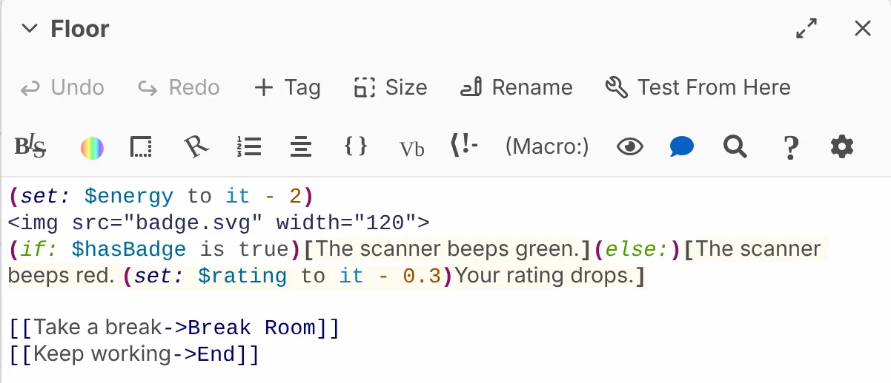
A passage that changes a variable, shows an image, and checks a variable.
Rules that trip people up:
Use to when setting and is when checking. Not =.
✗ Doesn't work
(set: $energy = 10)
(if: $hasBadge = true)[...]
✓ Works
(set: $energy to 10)
(if: $hasBadge is true)[...]
Variable names are case-sensitive: $Energy and $energy are two different boxes.
✗ Shows 0, because $Energy was never set
(set: $energy to 10)
You have $Energy energy left.
No spaces, and don't start with a number. Use camelCase: $hasBadge, $timesLate. (It's also more like camels.)
The text that's shown or hidden goes in square brackets right after the (if:), with no space between them.
✗ Doesn't work (space before the bracket)
(if: $hasBadge is true) [The scanner beeps green.]
✓ Works
(if: $hasBadge is true)[The scanner beeps green.]
Use is not for "not equal". Not !=.
✗ Twine shows an error: "!=" isn't valid Harlowe syntax
(if: $energy != 0)[You can still work.]
✓ Works
(if: $energy is not 0)[You can still work.]
No quotes around true, false, or numbers. Quotes turn them into text.
✗ Never shows "green", and Twine doesn't warn you
(set: $hasBadge to "true")
(if: $hasBadge is true)[The scanner beeps green.]
✗ Twine shows an error: I can only do > to numbers, not the string "18"
(set: $age to "18")
(if: $age > 10)[...]
✓ Works
(set: $hasBadge to true)
(set: $age to 18)
Quotes are only for words: (set: $name to "Sam").
Set your starting values in your startup passage, and only there. If you put (set: $energy to 10) in a passage the player can come back to, it resets every time.
✗ Passage: Floor (the player returns here after every break)
(set: $energy to 10)
(set: $energy to it - 2)
Energy: $energy
This always says "Energy: 8", no matter how tired the player should be. Move (set: $energy to 10) to your startup passage.
In one passage with the tag startup. Twine runs it first, every time, even when you test from the middle of your story.
Make a new passage. Call it Setup. It doesn't need any links, and players never see it.
Click + Tag and type startup: all lowercase, one word.
Put all your starting values in it:
Passage: Setup (tag: startup)
(set: $energy to 10)
(set: $rating to 4.6)
(set: $hasBadge to false)
Delete those same (set:) lines from your first passage, so they're only in one place.
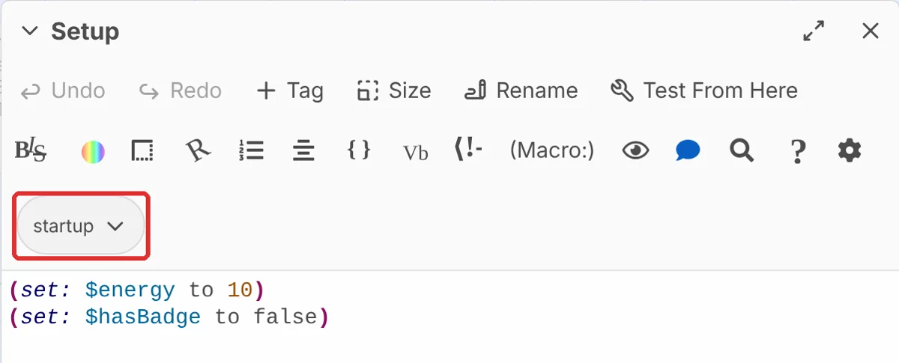
The startup tag, circled.
Why bother?
Without it, Test From Here skips your first passage, and every variable shows 0 (see this). With it, you can test any passage and your variables are ready. The startup passage runs once, at the start, not on every passage.
How do I make a stats bar that shows on every passage?
Make a new passage, give it the tag footer (or header), and put your stats in it. Harlowe adds it to the bottom (or top) of every passage automatically.
Create a new passage. Call it anything (StatusBar is fine). It doesn't need to be linked to anything.
In that passage, click + Tag, type footer, and save. Use header if you want it at the top instead. Type it exactly, all lowercase: Footer or footers won't work, and Twine won't tell you.
Write what you want shown:
Passage: StatusBar (tag: footer)
<hr>
Energy: $energy | Rating: $rating
The tag shows up under the toolbar.What the player sees. The line and the stats appear on every passage.
Tip
You can put (if:) in a footer too, for example a warning that only shows when $energy is low.
What's the little back arrow in the corner? Should I hide it?
It's Harlowe's undo button. Players see it in your exported game and on itch, and it lets them take back any choice. For this project, you probably want to hide it.
The curved arrow at top left appears from the second passage on.
Clicking it doesn't break your game. It rewinds to the previous passage and rewinds your variables, so it's as if the choice never happened. That's exactly the problem:
Undo can undo your argument
If your game argues that you can't escape the rating, the debt, or the algorithm, a button that lets players escape any bad outcome works against you. Consequences only argue something if they stick.
To hide it:
Open your story and click Story at the top, then Stylesheet.
Paste this in:
tw-sidebar { display: none; }
Play the game again to check that the arrow is gone.
Story → Stylesheet.
The browser's back button is different
The browser's own back button (or Alt + ←) doesn't go back one passage. It leaves the game and goes to whatever page you were on before. Warn your playtesters.
How do I add randomness (dice rolls, chance)?
(set: $roll to (random: 1, 6))
(if: $roll is 6)[You find a twenty on the ground.](else:)[Nothing. Just pavement.]
(random: 1, 6) picks a whole number from 1 to 6. More in the dice rolling recipe.
How do I leave notes for myself or my group inside the game?
<!-- TODO: Ana is writing this ending. Don't touch. -->
Anything between <!-- and --> is invisible to the player.
How do I style text (bold, italics, colours)?
''bold'' //italics// ~~strikethrough~~
(text-colour: red)[This is red.]
Upload the image to an image host (for example Imgur).
Open the image, right-click on the image itself, and choose Copy image address (Chrome) / Copy Image Link (Firefox, Safari). Not "Copy link", not the address bar.
Paste it inside the quotes: <img src="https://i.imgur.com/abc123.png" width="300">. A good address usually ends in .png, .jpg, .gif, or .webp.
Test it in an incognito window after uploading to itch.
Pros: you can see the image while testing in Twine. Cons: you depend on the other site keeping your image up and letting you link to it.
Option 2: Bundle your images with the game in a zip (recommended)
Put your game and your images in one folder, link to the images by file name, zip the folder's contents, and upload the zip to itch.
Make a new folder on your computer. Put all your images in it.
In Twine, link to them by file name only:
<img src="badge.png" width="300">
When you're done, Build → Publish to File, and save the .html into that same folder.
Rename the .html to index.html. itch needs this name to know which file to start.
Open the folder, select everything inside it, and zip it (Windows: right-click → Send to → Compressed (zipped) folder. Mac: right-click → Compress).
✓ Above: open the zip and index.html is the first thing you see.
my-game.zip ✗
└── my-game/
├── index.html
└── badge.png
✗ Above: the game is buried inside another folder. This happens when you zip the folder instead of the things inside it. Open your zip to check before uploading.
The three ways this goes wrong
Capital letters. On itch, Badge.PNG and badge.png are different files. Your computer doesn't care, itch does. Use all lowercase and no spaces: break-room.png, not Break Room.PNG.
Wrong file name. The game has to be called exactly index.html (not index.html.html, not The Shift.html).
Wrong kind of archive. itch takes .zip only. Not .rar, not .7z.
Note
With this method, images won't show when you test inside Twine, because Twine doesn't know where your folder is. That's normal. To check them, Publish to File into the folder and double-click the .html there.
You still submit the .html on Lea as usual. itch is where the images have to work.
My image is huge / squished / stretched.
Set only the width. The height adjusts itself to keep the proportions:
<img src="badge.png" width="300">
If you set both width and height and they don't match the original shape, the image warps. Want to make your own art? Try Piskel or Pixilart (pixel art, animated gifs too).
How do I add a background image?
With a few lines of CSS in your story's Stylesheet. You can set one background for the whole game, and give certain passages their own.
One background for the whole game
Open your story, click Story at the top, then Stylesheet.
Paste this in, and replace office.jpg with your image's file name or full address (the same rules as any other image):
The first image is the bottom layer. Its width should match the box's width.
The second image sits on top. left and top are how far it is, in pixels, from the top-left corner of the bottom image. Nudge the numbers until it's in the right place.
The top image should be a PNG with a transparent background, or it'll sit on top as a rectangle. (Piskel and Pixilart both save transparent PNGs.)
Keep the whole thing on one line, as above. Line breaks inside it add gaps.
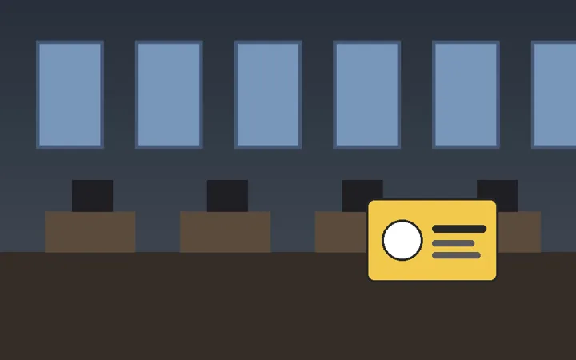
The result.
Only show the top layer sometimes. This is where it gets useful: the scene can change based on your variables (the badge appears once the player has taken it). Wrap the whole box in the (if:), and use (else:) for the version without it:
Why: putting the (if:)inside the box changes what the badge measures its position from, so it ends up below the picture instead of on it.
Can I add music or sound?
Yes, but Twine doesn't do it on its own. The easiest route is Bitsy Audio (yes, it's a Bitsy tool; no, that's not a typo). For more control, the Harlowe Audio Library. Either way, your audio files go in the folder with your game and you upload a zip, exactly like Option 2 for images.
Don't start music on the first passage
Browsers block sound until the player has clicked something. Music on your very first passage usually stays silent. Put a "Start" link first, and start the music on the passage after it.
Please don't make it annoying. Players will mute you.
itch.io
How do I upload my game to itch.io?
Make a free account at itch.io with an email you actually check.
Click the arrow next to your avatar (top right) → Upload new project.
Fill in a title and a short description. Nothing fancy.
Set Kind of project to HTML. This is the most important setting. If you leave it on "Downloadable", nobody can play in the browser.
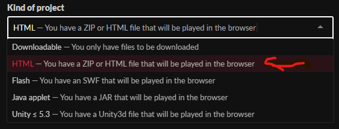
Upload your file: the .html from Publish to File, or your .zip if you have images/sound bundled.
When it finishes uploading, tick This file will be played in the browser.
Set the viewport size (1280 × 720 is a fine start). Under Frame options, tick Mobile friendly and Fullscreen button.
Scroll to the bottom, click Save & view page. Check that your game shows up.
Go back to the settings (click the DRAFT banner or Edit game at the top), scroll to the bottom, and under Visibility & access choose Public. Save again. You can only do this after saving once.
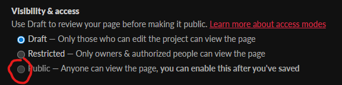
Copy the URL of the game page and test it in an incognito window.
Does my file have to be called index.html?
Only if you upload a zip.
Uploading just the .html file: any name works (The Shift.html is fine).
Uploading a .zip (because you have images or sound in it): the game inside must be called index.html.
Also: a single .html upload can't see any other files you upload to itch. If your images are separate files, they need to be in the zip with the game.
I fixed something. How do I update the game on itch?
Edit game → upload the new file.
Delete the old file (or the old one may be the one that plays).
Tick This file will be played in the browser on the new one.
Save, and test in incognito. Your URL stays the same, so you don't need to resubmit the link.
Submitting
Final checklist: did I do everything?
Due dates live on Lea and nowhere else. Tick these off (the boxes are just for you; nothing is saved or sent):
My itch link works for me but my reviewers say it's broken.
It's almost always still set to Draft.
When you're logged in, itch shows you your own drafts. Nobody else can see them. Set Visibility to Public, then check in an incognito / private window.
If it's Public and still broken, check the other three usual suspects:
Did you tick This file will be played in the browser?
Did you upload the .html from Publish to File (or your .zip), not a .twee or a screenshot?
Public only becomes available after you've saved the page once.
Why aren't my images showing up?
Almost always: the link you used isn't a link to an image. It's a link to a web page that has an image on it.
An image in Twine is one line of HTML:
<img src="PUT THE IMAGE ADDRESS HERE" width="300">
Test your code with this image first
Copy this line into a passage and play it. You should see a green check mark saying "If you can see this, your image code works!"
<img src="TEST-IMAGE-URL" width="300">
If it shows up, your code is fine, and the problem is the address of your own image (keep reading). If even this doesn't show up, check your quotes and brackets against the line above.
What you should see.
The address has to point straight at the image file. A good test: paste the address into a new browser tab. If you see only the image on a blank background, it's right. If you see a website (menus, comments, a Google Drive viewer, a Pinterest page), it's wrong.
Two images in the editor...
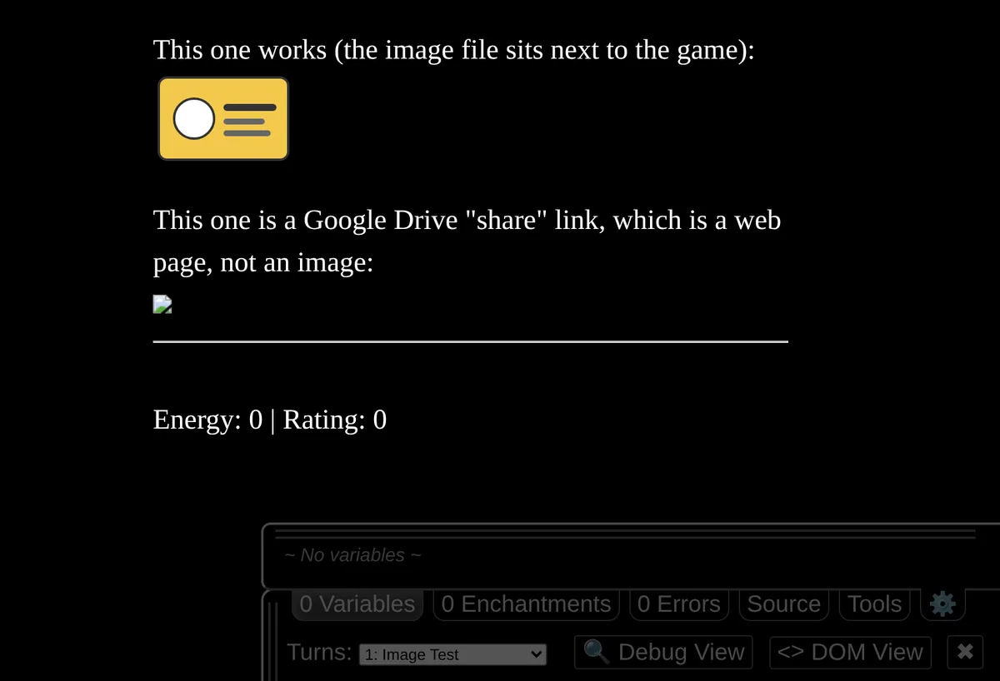
...and in the game. The Google Drive link becomes a broken-image icon.
Links that will not work:
Google Drive / Google Photos / OneDrive share links. These are viewer pages, not images.
Images from Google Image search results. Copy the address of the actual image, not of the search result.
Sites that block "hotlinking" (using their images on someone else's page). Some sites refuse, so the image works when you visit the site and fails in your game.
Addresses starting with http:// (no "s"). itch only loads https:// links.
Anything on your own computer like C:\Users\... or /Users/.... It works on your machine only.
I copied code from a PDF or Google Doc and it doesn't work.
Curly "smart" quotes. Code needs straight quotes.
Word, Google Docs, and PDFs often turn " into “ and ”. They look almost the same to you, but Twine doesn't recognize them. The same goes for apostrophes. Either retype the quotes inside Twine, or turn smart quotes off (in Google Docs: Tools → Preferences → uncheck "Use smart quotes").
Broken (curly quotes)
(goto: “Floor”)
Works (straight quotes)
(goto: "Floor")
When I test, my variables all say 0. Why?
Your starting (set:)s didn't run. Fix: put them in a passage tagged startup (how).
In Harlowe, a variable that was never set shows up as 0. This usually happens when you click Test From Here on a passage in the middle of your story: Twine starts right there and skips your first passage, where your (set:)s are.
Tested from the middle: "Energy: 0 | Rating: 0", because the passage that sets them never ran.
A passage tagged startup always runs first, even with Test From Here. Move your starting values there and this problem goes away for good.
My variable changed, but the text on screen didn't.
Your code probably works. Twine runs a passage's code once, top to bottom, the moment the passage appears. Text that's already on screen doesn't refresh when a variable changes afterwards.
✗ Looks broken
(set: $strength to 1)
Your strength is: $strength
(link: "Do squats")[(set: $strength to it + 1)]
The player clicks "Do squats" and the screen still says Your strength is: 1. The variable did change to 2, but that line was written before the click and doesn't update. So don't start rewriting your (set:): it's fine.
Two fixes:
✓ Fix 1: show the new value inside the hook, after the change
(set: $strength to 1)
Your strength is: $strength
(link: "Do squats")[(set: $strength to it + 1)Your strength is now $strength.]
✓ Fix 2: send the player to a new passage, where everything is written fresh
(link: "Do squats")[(set: $strength to it + 1)(goto: "Gym Results")]
Same thing with stats bars
A header or footer is written when the passage appears too. If a link changes a variable without leaving the passage, the stats bar keeps showing the old number until the player reaches the next passage. Fix 2 avoids this.
My music doesn't play.
Most likely the browser blocked it. Browsers don't allow sound until the player clicks something, so start your music after a click.
Make your first passage a title screen with a Start link.
Start the music on the passage that link goes to, not on the first one.
Still silent? Check these:
The audio file is in your zip, next to index.html (same as images).
The file name in your code matches exactly, capitals included: Music.MP3 is not music.mp3 on itch.
If it's a link to a file online, it starts with https://.
Make the viewport size bigger, and check that Fullscreen button is ticked under Frame options. If long passages get cut off at the bottom, also tick Enable scrollbars. Then test it again.
What are the mistakes people make every semester?
In rough order of how often I see them:
itch page left on Draft. Works for you, broken for everyone else. Fix.
Images linked from Google Drive or their own computer.Fix.
Typos in passage names, which create empty dead-end passages. Check Story → Details for broken links.
Dead ends. A passage with no links and no ending. Players get stuck. Every passage should either link onward or clearly be an ending.
Importing an old file over a newer game with the same name. Fix.
Starting values in the first passage instead of a startup passage, so testing shows 0s. Fix.
Tag typos:Footer, start up. Tags must be typed exactly, lowercase.
Variables that reset because the (set:) is in a passage the player returns to.
Using = instead of to (setting) or is (checking).
Capitalization mismatches in variable names or image file names.
Variables that don't do anything. A variable that's set but never checked doesn't change the game, and doesn't make an argument. Say in your reflection what each variable does.
Two group members editing two copies of the game. Fix.
Never playing it start to finish before submitting. Play every path at least once. Better: get a friend to play it while you watch and say nothing.
Nothing matches that. Try a different word, or send me a Mio.